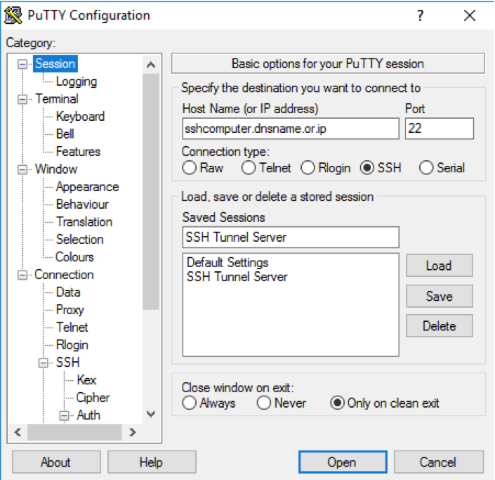

Adding Public SSH Key¶
Table of Contents
This guide shows how to connect to your host machine and insert your public key into authorized_keys file.
Important
The authorized_keys file specifies the SSH keys that can be used for logging into the user account. Please read following guide carefully, since it is a highly important configuration file.
Step 1: Connecting to host machine¶
A. If you’re using Windows¶
In order to make an SSH connection to your host machine, you need to use program like PuTTY.
A.1. Download and open PuTTY from their website.
A.2. Use the following info to configure your connection and click Open to start the SSH session.

- Host Name:Enter the Internet Protocol (IP) address of your host. (eg. example.com OR s00000.testserver.com)
- Port: 22
- Connection Type: SSH
A.3. If this is the first time that you have used PuTTY to log in to your account with SSH, a warning similar to the following one displays. If you are sure that you have entered the correct information, click Yes.
A.4. After you accept the warning, the terminal prompts you for your username and password. Please enter these values and press enter.
Caution
- The password is not echoed back to the screen as it is entered.
- If you need to copy and paste your password, you can right-click (or use middle mouse button) to paste your password.
A.5. If this is the first time that you login to your host machine, you might need to reset your password. Please enter the new password and press Enter. Note that passwords are not echoed to the screen. After changing your password, you will be logged out and you need to reconnect to your host machine.
A.6. If you have entered the correct password, the prompt responds with a shell prompt:
[us2r@yourhostname ~]#
{kind=link}
{kind=link}
B. If you’re using Linux or MacOS¶
If you are a MacOS or Linux user, you can make an SSH connection by using Terminal, a console program included with the operating system.
B.1. Search for the Terminal program in your operating system and click to open it.

B.2. First, you should type the
sshcommand in the console. Then enter your username and hostname and add@sign in between (eg.yourusername@yourhostname,user@ghpcc06.umassrc.org) and press enter:ssh us2r@yourhostname
B.3. The terminal prompts you for your password. Please enter your password and press enter.
Caution
- The password is not echoed back to the screen as it is entered.
- You can still copy and paste your password, but it won’t appear in your screen.
B.4. If this is the first time that you login to your host machine, you might need to reset your password. Please enter the new password and press Enter. Note that passwords are not echoed to the screen. After changing your password, you will be logged out and you need to reconnect to your host machine.
B.5. If you have entered the correct password, the prompt responds with a shell prompt:
[us2r@yourhostname ~]#
Step 2: Editing authorized_keys file¶
In order to edit
authorized_keysfile, we will use vi editor. Please enter following command to open vi editor:vi ~/.ssh/authorized_keysPress
ibutton to change the editor mode to insert mode. Now you’re ready to insert new text into this file.Return back to DolphinNext website and copy all of your public ssh key (command + c for MacOS or ctrl + c for Linux/Windows).
Caution
Please don’t forget to copy initial part of the ssh key(eg.
ssh-rsa). It should cover all of the following example key file:ssh-rsa AA1AB3N4nX3a.................... ................................ ................................ ...............b9Rj @dolphinnextReturn back to terminal/Putty and paste your key (command + v for MacOS, ctrl + v for Linux, right-click for Windows).
If you already have another public key in your file, please press enter to separate keys from each other.
If you’ve successfully edited your file and ready to exit from the editor, please press
ESCto exit from insert mode and type:wq!and press enter.Tip
If something went wrong and you don’t want to save you changes, then please press
ESCto exit from insert mode and type:q!and press enter to exit.
Step 3: Setting correct directory permissions¶
The SSH protocol requires following file/directory permissions to establish secure connections.
Please execute following commands to make sure SSH related files are not writeable by other users:
chmod 700 ~/.ssh chmod 600 ~/.ssh/authorized_keysCaution
Your home directory shoudn’t be writeable by other users. If you need to share your files with everyone, don’t set permission of your home directory to 777. It creates security issues and blocks ssh connection. You can set to more secure options such as 750, 755 or 754.